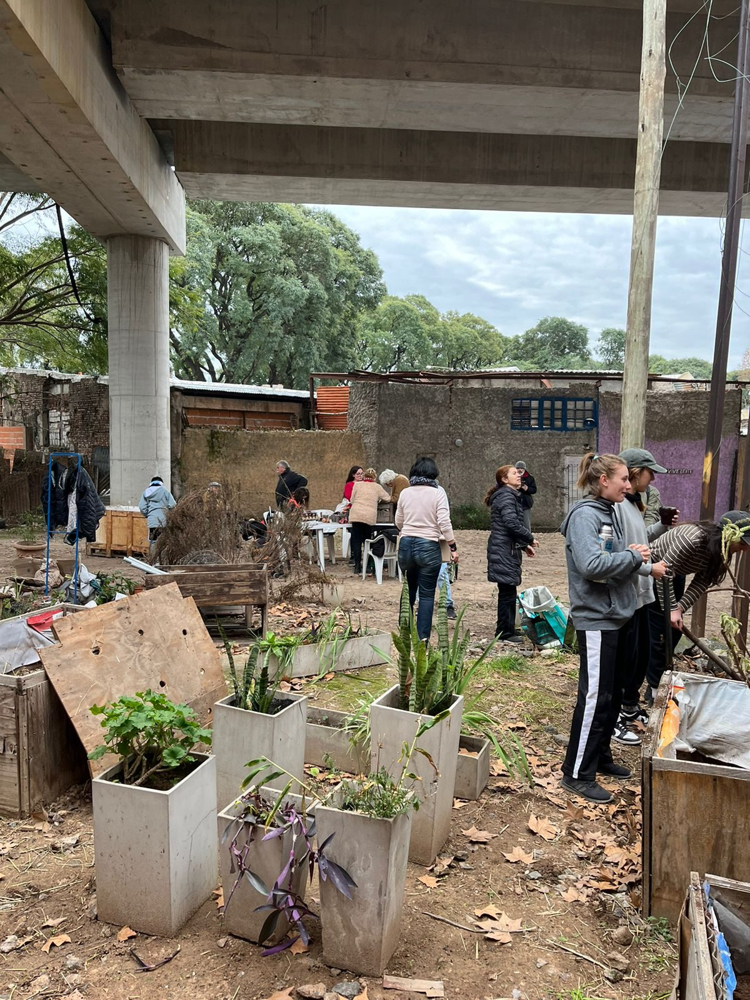
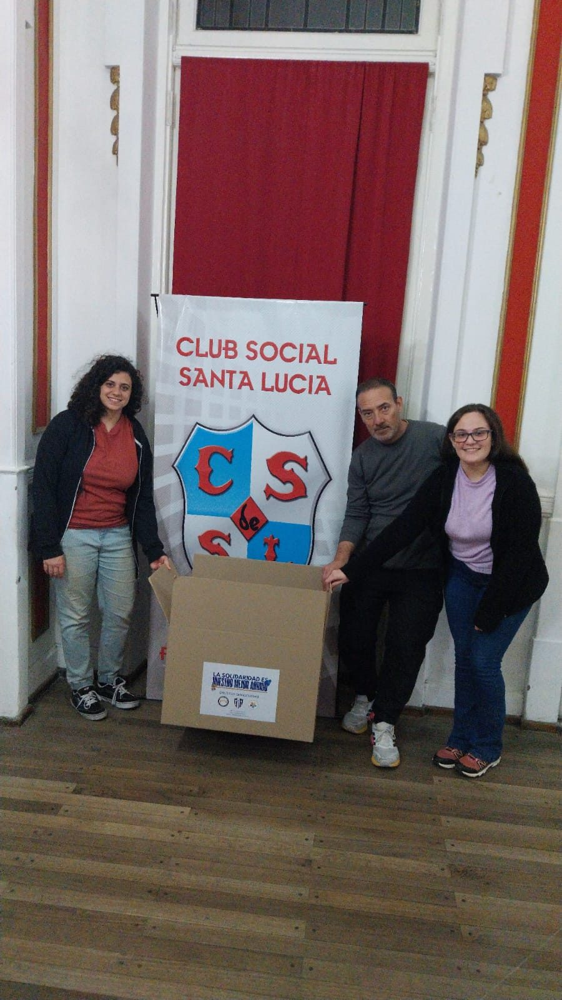

Salud
Salud comunitaria
Promovemos hábitos saludables, cuidado integral y espacios de acompañamiento para fortalecer el bienestar de la comunidad.

Deporte, educación y comunidad
Impulsamos proyectos que conectan clubes, instituciones, empresas y profesionales para transformar realidades desde el deporte.
Ver proyectosSobre nosotros
Reunimos clubes, federaciones, instituciones deportivas, empresas, profesionales y miembros de la comunidad para generar impacto positivo en barrios, instituciones y personas. Trabajamos desde una mirada deportiva, educativa, cultural y ambiental.
Ofrecemos una variedad de actividades y eventos tanto sociales como formativos para producir puntos de encuentro entre las comunidades.
Nuestro trabajo
Iniciativas que articulan deporte, inclusión, formación y cuidado del entorno en comunidades e instituciones de la Ciudad de Buenos Aires.

Creamos talleres y espacios de aprendizaje para dirigentes, familias, entrenadores y deportistas, fortaleciendo el valor educativo del deporte.

El deporte urbano como forma de habitar, transformar y compartir la ciudad.

Promovemos hábitos saludables, cuidado integral y espacios de acompañamiento para fortalecer el bienestar de la comunidad.

Junto a Tendiendo Puentes y Tierra, Techo y Trabajo impulsamos colectas para que las redes deportivas, sociales y culturales respondan a necesidades concretas.

Acompañamos actividades que amplían la posibilidad de practicar deporte y fortalecen disciplinas emergentes desde una perspectiva inclusiva.
Colaborá
Trabajamos con organizaciones que quieran aportar recursos, conocimiento, espacios o tiempo para acompañar proyectos deportivos, educativos, culturales y ambientales.
Cada alianza se construye a partir de necesidades concretas y objetivos comunes, con foco en generar impacto positivo en la comunidad.